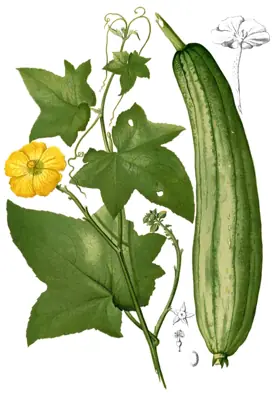

pranet · 出典付きの植物図鑑
ヘチマ
Luffa aegyptiaca Mill. · Cucurbitaceae

ヘチマ は、インド原産のウリ科の一年草。また、その果実のこと。日本には室町時代に中国から渡来した。別名、イトウリ、トウリ。
出典: Wikipedia 日本語版「ヘチマ」 · CC BY-SA 4.0
異名: Bryonia cheirophylla Wall., Luffa fricatoria Sessé & Moc., Luffa insularum A.Gray, Luffa leucosperma M.Roem., Luffa pentandra Roxb., Luffa petola Ser., Luffa subangulata Miq., Luffa sylvestris Miq., Melothria touchanensis H.Lév., Momordica carinata Vell., Momordica luffa L., Momordica reticulata Salisb., Poppya fabiana K.Koch, Turia cordata J.F.Gmel., Turia cylindrica J.F.Gmel.
同定や利用は自己責任でお願いします。この図鑑だけを根拠に野生の植物を食べないでください。
出典
- 学名: World Flora Online Plant List 2026-06 · CC0 1.0
- 名前: Wikipedia の記事名と Wikidata · CC0 1.0（Wikidata）。記事名は事実
- 説明: Wikipedia 日本語版「ヘチマ」 · CC BY-SA 4.0
- 食用・毒性: World Checklist of Useful Plant Species (Diazgranados et al. 2020, RBG Kew) · CC BY 4.0
- 分布: World Checklist of Vascular Plants (WCVP), RBG Kew, version 2026-06-04 · CC BY 3.0
このページは pranet のデータから自動生成しています。コードは MIT、データは項目ごとのライセンス（説明）。